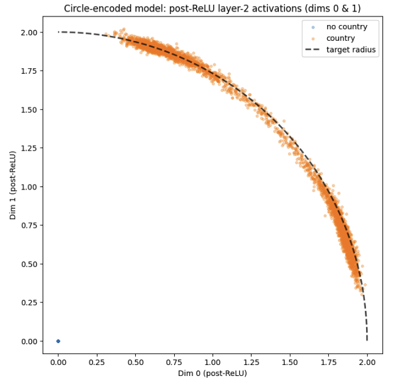

BlueDot Technical AI Safety Puzzle
Overview
This puzzle explores how neural networks represent features internally. Given a model trained on 8 binary features, one feature was deliberately encoded non-linearly in the activation space. The challenge had three parts: identify which feature, characterize its geometric representation, and train a new model with a different (equally weird) representation.

Task 1: Finding the Non-Linear Feature
To identify which feature was encoded non-linearly, I trained linear probes on the model's hidden layer activations for each of the 8 features. A linear probe is simply a logistic regression classifier. If it achieves high accuracy, the feature is linearly separable in activation space.
Linear Probe Results
| Feature | Accuracy |
|---|---|
| gender | 100.0% |
| age | 100.0% |
| income | 100.0% |
| married | 100.0% |
| kids | 100.0% |
| ill | 100.0% |
| employed | 100.0% |
| country | 74.9% |
The country feature stood out with only 74.9% accuracy, barely better than random guessing for a binary feature. This indicates it cannot be linearly separated in activation space.
Confirming with MLP Probe
To verify the information was present but non-linearly encoded, I trained an MLP probe (with a hidden layer) on the country feature. It achieved near-perfect accuracy, confirming the feature is represented, just not linearly.

PCA Visualization
Projecting activations to 2D via PCA reveals the structure visually. Linear features show clean separation along principal components; the country feature shows a more complex, enclosed structure.

Task 2: How Country is Represented
Understanding how the country feature was represented required analyzing the network's geometry more carefully.
Centroid Distance Analysis
I computed the centroids of activations for each country class. Unlike linearly-separated features where centroids are far apart, the country centroids were relatively close, suggesting a more complex boundary structure.

Weight Analysis
Examining which hidden neurons contribute to country classification revealed the mechanism:
- ~34 active neurons: These neurons have significant weights to the country output
- ReLU boundaries: Each neuron defines a hyperplane in input space where it transitions from inactive to active
- Intersection forms polytope: The combination of ~34 ReLU hyperplanes carves out a convex polytope in activation space

The Convex Polytope Hypothesis
My hypothesis: one country class corresponds to points inside a convex polytope bounded by ~34 ReLU hyperplanes, while the other class lies outside this region.
Interpolation Test
To verify convexity, I performed interpolation tests. For pairs of points from the same class, I checked whether points along the line between them maintained the same classification:
- Interior class: Interpolated points stayed inside (convexity property)
- Exterior class: Interpolated points could cross into the interior
This asymmetry confirms the convex polytope structure: the interior is convex by definition, while the exterior of a convex set is not convex.
3D Visualization
Projecting activations onto the first three principal components shows the polytope structure. The video below rotates through the 3D space, revealing how one country class forms an enclosed region.

Task 3: Training with Different Representation
The final task was to train a model that encoded the country feature in a different but equally "weird" (non-linear) way while maintaining accuracy on all 8 features.
Quarter-Arc Encoding
My approach: encode the country feature as a quarter-arc in a 2D subspace. Instead of a polytope, each country class occupies a distinct 90° arc on a circle. This is non-linear (not separable by a single hyperplane) but geometrically very different from a polytope.
Custom Loss Functions
I implemented two auxiliary losses to encourage this representation:
- Circle Loss: Penalizes deviation from unit circle in a designated 2D subspace of the activations. This constrains points to lie on a 1D manifold.
- Angular Spread Loss: Ensures the two country classes occupy distinct angular regions (~90° each) with clear separation between them.
Results
The trained model successfully encoded country as quarter-arcs while achieving high accuracy on all 8 classification tasks.

This demonstrates that the geometric representation of features in neural networks is a design choice. The same information can be encoded as polytopes, arcs, or other structures depending on the training objective.